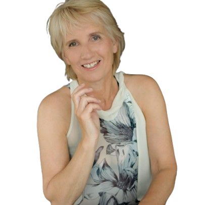

Over mij
Voor vrouwen die hebben overleefd in uitputtende relaties en nu, stap voor stap, hun eigen richting weer willen voelen.
Mijn naam is Anja. Ik ben coach en begeleider bij Praktijk Groeiwijze. Ik werk met vrouwen die herstellen van complexe of destructieve relaties, waarin langdurige stress, voortdurende alertheid en verstrengelde patronen hun leven diep hebben beïnvloed. Vrouwen die vaak blijven functioneren, maar zich vanbinnen leeg, uitgeput of vervreemd van zichzelf voelen.
Misschien herken je dat je lange tijd vooral bezig bent geweest met volhouden. Met aanpassen, inschatten, voorkomen. Zo lang, dat het contact met wat jij zelf nodig hebt naar de achtergrond is verdwenen. Dat is geen teken dat er iets mis is met jou. Het laat zien hoe sterk je bent geweest in omstandigheden die veel van je vroegen.
Hoe ik werk
Mijn begeleiding is gericht op herstel van identiteit, autonomie en innerlijke rust — in een tempo dat past bij jouw draagkracht en jouw leven van nu. Geen snelle oplossingen en geen druk om verder te zijn dan je bent. Wel aandacht, helderheid en praktische ondersteuning die aansluit bij je dagelijkse realiteit.
Samen kijken we rustig naar wat er speelt. Soms verdiepend, soms heel concreet. Altijd met respect voor jouw grenzen en keuzes. Je hoeft bij mij niets te bewijzen, niets te verdedigen en niets ‘goed’ te doen. Wat je ervaart wordt serieus genomen, zonder het te problematiseren of te reduceren tot labels.
Ik help je stap voor stap bij:
- het hervinden van je eigen kracht en innerlijke regie;
- het ervaren van meer rust en veiligheid in jezelf;
- het voelen en bewaken van je grenzen;
- het opnieuw contact maken met wie jij bent, los van overleven en aanpassen.
Achtergrond en ervaring
Ik combineer professionele scholing met ervaringsdeskundigheid. Ik heb opleidingen gevolgd in onder andere SPH, orthopedagogiek en gezinshulpverlening, en mij verder verdiept in systemisch werken, mindfulness en burn-outcoaching, familieopstellingen, NLP en oplossingsgerichte begeleiding. Daarnaast heb ik jarenlang gewerkt binnen jeugd-, gezins- en contextgericht werk, waar complexe relationele dynamieken een belangrijke rol spelen.
Tegelijkertijd weet ik uit eigen ervaring hoe ingrijpend het herstel na een destructieve relatie kan zijn. Die combinatie maakt dat ik situaties vaak snel herken, zonder ze te pathologiseren of te versimpelen.
Wat je van mij kunt verwachten
Ik bied een rustige, stabiele aanwezigheid. Ik luister naar wat je zegt, en ook naar wat nog geen woorden heeft. In onze gesprekken is ruimte voor kwetsbaarheid, twijfel en vertraging. We onderzoeken samen patronen — zonder schuld, zonder oordeel — en vertalen inzichten naar kleine, haalbare stappen die je daadwerkelijk kunt toepassen in je dagelijks leven.
Mijn begeleiding is erop gericht dat jij weer meer vertrouwen krijgt in je eigen waarneming en keuzes. Niet om afhankelijk te worden, maar om je eigen autonomie en richting stap voor stap te versterken.
Je herstelreis volgt jouw ritme. Ik loop een stukje met je mee, zolang dat helpend is.
Kennismaken?
Je hoeft niet meteen te weten wat je nodig hebt. Een eerste gesprek is vrijblijvend.
Neem gerust contact op